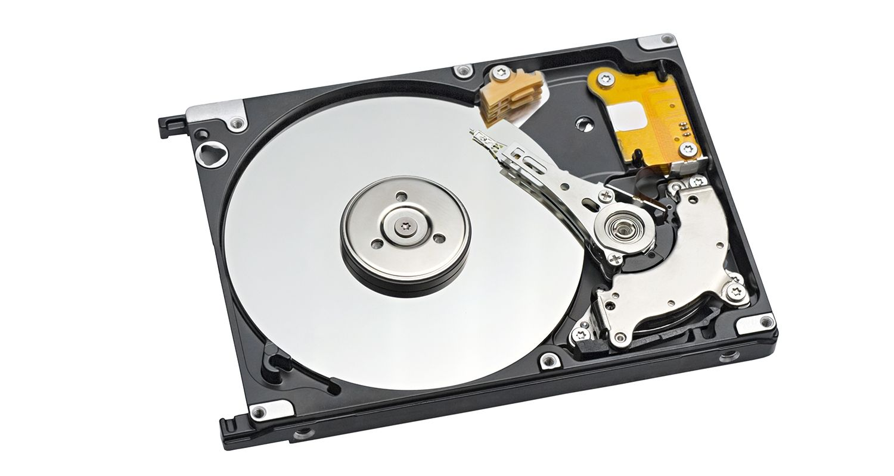

Disco Duro

En informática, unidad de disco duro o unidad de disco rígido
(en inglés: hard disk drive, HDD) es un dispositivo de almacenamiento
de datos que emplea un sistema de grabación magnética para almacenar
y recuperar archivos digitales. Se compone de uno o más platos o
discos rígidos, recubiertos con material magnético y unidos por
un mismo eje que gira a gran velocidad dentro de una caja metálica
sellada. Sobre cada plato, y en cada una de sus caras, se sitúa
un cabezal de lectura/escritura que flota sobre una delgada
lámina de aire generada por la rotación de los discos.[1] Permite
el acceso aleatorio a los datos, lo que significa que los bloques
de datos se pueden almacenar o recuperar en cualquier orden y
no solo de forma secuencial. Las unidades de disco duro son un
tipo de memoria no volátil, que retienen los datos almacenados
incluso cuando están apagados.[2][3][4]
El primer disco duro fue inventado por IBM, en 1956.[5] A lo largo de
los años, han disminuido los precios de los discos duros, al mismo
tiempo que han multiplicado su capacidad, siendo la principal opción
de almacenamiento secundario para computadoras personales, desde
su aparición en los años 1960.[6] Los discos duros han mantenido
su posición dominante gracias a los constantes incrementos en la
densidad de grabación, que se ha mantenido a la par de las
necesidades de almacenamiento secundario.[6]
Mejorados continuamente, los discos rígidos han mantenido esta
posición en la era moderna de los servidores y las computadoras
personales. Más de 224 compañías han fabricado unidades de disco
duro históricamente, aunque después de una extensa consolidación
de la industria, la mayoría de las unidades son fabricadas por
Seagate, Toshiba y Western Digital. Los discos duros dominan el
volumen de almacenamiento producido (exabytes por año) para
servidores. Aunque la producción está creciendo lentamente,
los ingresos por ventas y los envíos de unidades están disminuyendo
debido a que las unidades de estado sólido (SSD) tienen mayores
tasas de transferencia de datos, mayor densidad de almacenamiento
de área, mejor confiabilidad,[7] y tiempos de acceso y latencia
mucho más bajos.[8][9][10][11]